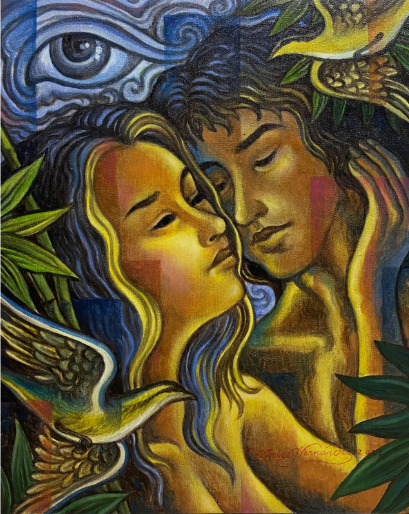
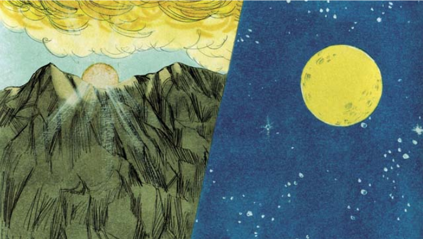

Tagalog sa Timog
Nilalaman ng mga literatura, mga diyos, at mga mahihiwagang nilalang sa tradisyonal na mithos ng mga Tagalog

Si Malakas at Maganda
Si Malakas at Maganda
Illustrasyon mula kay AriesHernandez, 2022
Mga Literatura
Ang Pinagmulan ng Daigdig (Si Malakas at Si Maganda)
- Mito ng pagkabuo ng Pilipinas kung saan nagsanib (kinasal) ang hangin sa lupain at hangin sa kalangitan na nagbunga ng isang kawayan. Isang galit na ibon ang tumuka sa kawayan, dahilan ng pagkabiyak nito at lumabas sina Malakas at Maganda.

Bakit mas maliwanag ang araw kaysa buwan?
Ilustrasyon mula sa Kanayon, 2008
Bakit mas Maliwanag ang Araw kaysa sa Buwan
-
May isang engkanto na may dalawang anak na babae: si Araw, na mabait, at si Buwan, na masungit. Humingi ng
tulong ang engkanto sa Diyos laban sa kanyang anak na pasaway. Nang makita ng Diyos kung gaano kasama ang
ugali ni Buwan at gaano naman kagiliw-giliw at mabait si Araw, binigyan niya ng diyamante ang nakatatandang
kapatid bilang gantimpala. Nagalit si Buwan sa paborotismo at nagnakaw ito ng diyamante sa kaharian ng Diyos
ngunit napagtanto niyang mas maliit ito kaysa sa nabigay kay Araw. Nang malaman ng Diyos ang ginawa ni Buwan,
ipinadala niya ang dalawang anghel upang parusahan siya ngunit sa halip na parusahan, itinapon ng mga anghel
ang magkapatid sa dagat at ang kanilang mga diyamante sa langit. Mula noon, ang mas malaking diyamante ay
tinatawag na Araw at ang mas maliit naman ay tinatawag na Buwan.

Ang Alamat ng Paglikha sa Mundo
Ang Alamat ng Paglikha sa Mundo
Ilustrasyon mula sa Wikang Tagalog
Ang Alamat ng Paglikha sa Mundo
-
Ikinasal ang anak nila Kapitan, Bathala ng Langit, at ni Dagatan, Bathala ng Karagatan, na sina Ulap at Alon.
Nagkaroon sila ng apat na anak: sina Lupa, Araw, Buwan, at Tao. Isang araw, habang naglalaro ang magkakapatid,
hindi sinadyang nasaktan nila ang kanilang lolo’t lola. Sa paghingi nila ng tawad, dumating ang mga bola ng
apoy mula sa langit at naging sanhi ng pagkamatay ng magkakapatid. Nalungkot si Kapitan at Dagatan at isinalin
ang kanilang kapangyarihan sa mga apo. Si Araw ay nagbigay liwanag sa umaga, si Buwan ay nagbigay liwanag sa
gabi, si Lupa ay tinubuan ng halaman, at si Tao ay nahati sa lalaki at babae na naging unang mga tao sa mundo.
Mga diyos
- Bathala - Poong Maykapal ng Katagalugan
- Lakapati - Diyosa ng Pagkamayabong
- Mapulon - Diyos ng Panahon at asawa ni Lakampati
- Idiyanale - Diyosa ng Pagtratrabaho at Gawang-Kabutihan
- Dimangan - Asawa ni Idiyanale at Diyos ng Magandang Ani
- Amanikable - Diyos ng Dagat ng may galit sa tao dahil sa pagtataksil ng isang babae.
- Tala - Diyosa ng mga Bituin at anak ni Bathala sa isang mortal na babae.
- Hanan - Diyosa ng mga Umaga at anak ni Bathala sa isang mortal na babae.
- Sitan - Diyos ng Kasamaan
- Amansinaya - Diyos ng mga Mangingisda
- Anagolay - Asawa ni Dumakulem at Diyos ng Nawawalang Bagay
- Dumakulem - Diyos ng Kabundukan at anak ni Idiyanale at Dimangan
- Anitun Tabu - Kapatid ni Dumakulem at Diyosa ng Hangin at Ulan
- Galang Kaluluwa - Kaibigan ni Bathala at Diyos ng Paglalakbay
- Dian Masalanta - Diyosa ng Pag-ibig, Kagandahan, Pagdadalang tao at Patron ng mga magkakasintahan.
Mga Mahihiwagang Nilalang
- Kapre - Higanteng nilalang na naninirahan sa mga puno na may dala dalang tabako sa bibig o kamay. Isang nilalang na matangkad, maitim, mabalahibo, matipuno at mayroon masangsang na amoy.
- Duwende - Maliit na nilalang na naninirahan sa mga bundok at lupa.
- Maligno - Isang espiritu o halimaw na may kakayahan na manakit ng tao. Sinasabing “namaligno” kung nagkasakit ang indibidwal dulot ng kagagawan ng maligno.
- Tikbalang - Nilalang na mayroon katawang ng isang tao ngunit may mga paa ng kabayo at malakabayong hitsura. Pinaniniwalaan na nakakasanhi ng pagkaligaw ng mga taong naglalakbay sa kagubatan at mga bundok.
- Tiyanak - Halimaw na nagpapangap bilang isang sanggol upang manghikayat ng biktima. Kapag binuhat ito ng isang biktima, ay babalik sa tunay na anyo na isang mabangis na halimaw.
- Aswang - Nilalang na mahina sa umaga ngunit mabangis sa gabi. Pinaniniwalaan kumakain ng tao at ng iba pang mga hayop.